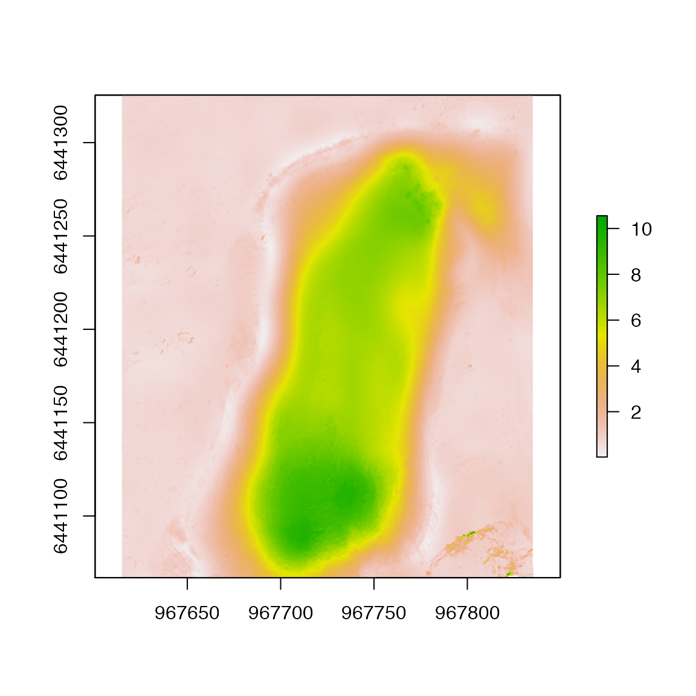
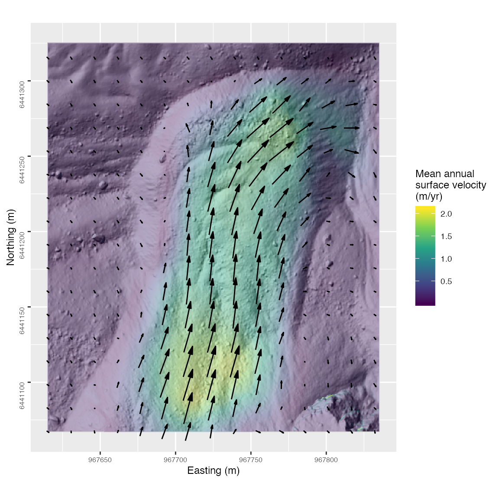

2_Visualizing_surface_displacements.RmdThe BUnwarpJ plugin in the open-source image processing software ImageJ/Fiji can be a very useful tool for high-resolution surface deformation modelling from digital elevation models (DEMs). The map.disp.r package was built for importing bUnwarpJ image registration based on DEMs and computing displacements in the x,y and z directions.
This vignette
As a case study, we will map the deformation patterns of a rock glacier using DEMs that were derived from lidar and structure-from-motion topographic surveying (Goetz et al 2019).
To start, we will load our DEMs for the years 2012 and 2017 that were used for performing image registration in BUnwarpJ for displcament mapping.
The raw transformation file from BUnwarpJ describes the registration by providing the coordinates for each pixel of the source image and the corresponding row and column position of the target image. To apply this transformation to georeferenced images, we need to convert these positions to a local CRS. The dem.displacement.mapping() function does this for us by using the source and target DEMs used for performing image registration. Additionally, it computes the vertical displacement (in the z direction), as well as the direction (aspect) of the 2D (xy) displacements and the slope of the z displacement.
library(map.displ.r) f_tx <- "RAW_rock_glacier_hillshade_2012_50cm_direct_transf.txt" d_tx <- dem.displacement.mapping(tx_file = f_tx, r_source = dem2012, r_target = dem2017) head(d_tx)
#> x_source y_source z_source x_target y_target z_target x_disp y_disp
#> 1 967615.2 6441325 2452.823 967615.7 6441325 2452.533 0.5000486 -0.4277765
#> 2 967615.7 6441325 2452.686 967616.2 6441325 2452.594 0.4972561 -0.4356877
#> 3 967616.2 6441325 2452.659 967616.7 6441325 2452.632 0.4944839 -0.4430315
#> 4 967616.7 6441325 2452.713 967617.2 6441325 2452.732 0.4917353 -0.4498284
#> 5 967617.2 6441325 2452.777 967617.7 6441325 2452.789 0.4890138 -0.4560988
#> 6 967617.7 6441325 2452.854 967618.2 6441325 2452.864 0.4863229 -0.4618633
#> z_disp xy_disp xyz_disp aspect slope
#> 1 -0.290527344 0.6580588 0.7193382 130.5460 -23.8210508
#> 2 -0.091552734 0.6611259 0.6674349 131.2243 -7.8841792
#> 3 -0.026855469 0.6639211 0.6644641 131.8587 -2.3163393
#> 4 0.019042969 0.6664452 0.6667172 132.4516 1.6367211
#> 5 0.011962891 0.6687007 0.6688077 133.0054 1.0248980
#> 6 0.009521484 0.6706919 0.6707595 133.5223 0.8133454Using raster we can assign the values of the displacement mapping to a grid. This is useful for exporting.
# Assign displacement values to an emptry raster to export r_na <- setValues(dem2012, NA) disp_3d <- setValues(r_na, d_tx$xyz_disp) plot(disp_3d)

For visualization of the displacements in R, we can use ggplot2 combined with the metR and ggnewscale packages. metR can create arrows indicating the magnitude and direction of displacement vectors, and ggnewscale lets us plot multiple geom_raster()’s each with their own fill scale and legend.
library(ggplot2) library(metR) library(ggnewscale) # Load hillshade for our map of displacements hs2017 <- raster("rock_glacier_hillshade_2017_50cm.tif") hs2017_df <- as.data.frame(hs2017, xy=TRUE) names(hs2017_df) <- c("x", "y", "hs") # Estimate mean annual surface velocity (m/yr) over the five year period d_tx$mean_disp <- d_tx$xyz_disp/5 # Make displacement map map <- ggplot(d_tx, aes(x_source,y_source)) + geom_raster(data=hs2017_df, aes(x=x, y=y, fill = hs), show.legend = FALSE) + scale_fill_gradient(high = "white", low = "black", na.value = "#FFFFFF") + # Allow for multiple scale fills using ggnewscale package new_scale("fill") + geom_raster(data=d_tx, alpha = 0.4, aes(x=x_source, y=y_source, fill = mean_disp)) + scale_fill_viridis_c(name = "Mean annual\nsurface velocity\n(m/yr)", direction = 1) + # Create arrows using metR package geom_arrow(data=d_tx, aes(dx = x_disp, dy = y_disp), skip = 30, show.legend = FALSE) + xlab("Easting (m)") + ylab("Northing (m)") + coord_fixed() + theme(text = element_text(size = 9), axis.title = element_text(size = 9), axis.text = element_text(size = 6), axis.text.y = element_text(angle = 90)) map

Arganda-Carreras, I., Sorzano, C. O., Marabini, R., Carazo, J. M., Ortiz-de-Solorzano, C., & Kybic, J. (2006, May). Consistent and elastic registration of histological sections using vector-spline regularization. In International Workshop on Computer Vision Approaches to Medical Image Analysis (pp. 85-95). Springer, Berlin, Heidelberg.
Goetz, J., Fieguth, P., Kasiri, K., Bodin, X., Marcer, M., & Brenning, A. (2019). Accounting for permafrost creep in high-resolution snow depth mapping by modelling sub-snow ground deformation. Remote Sensing of Environment, 231, 111275.